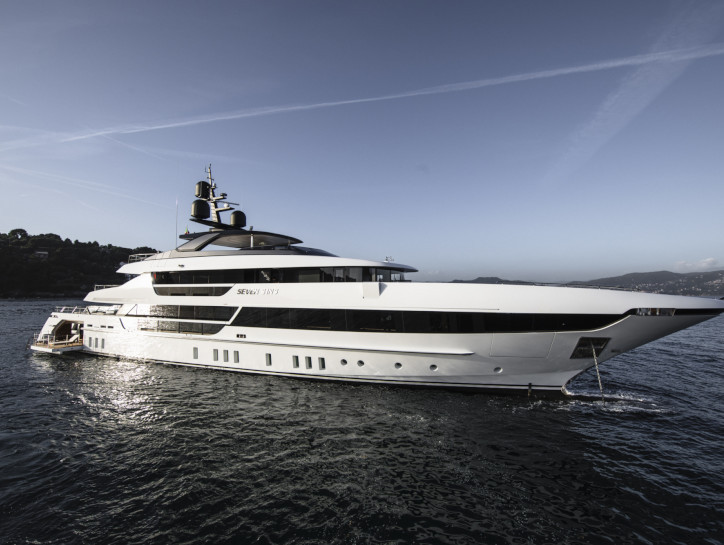
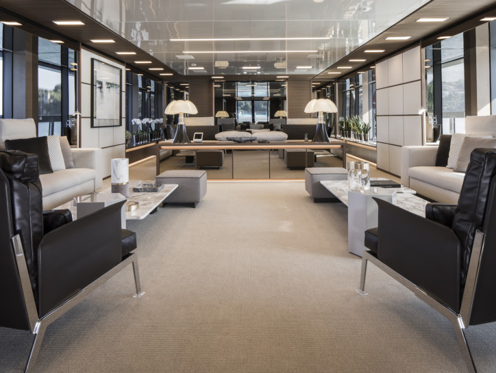
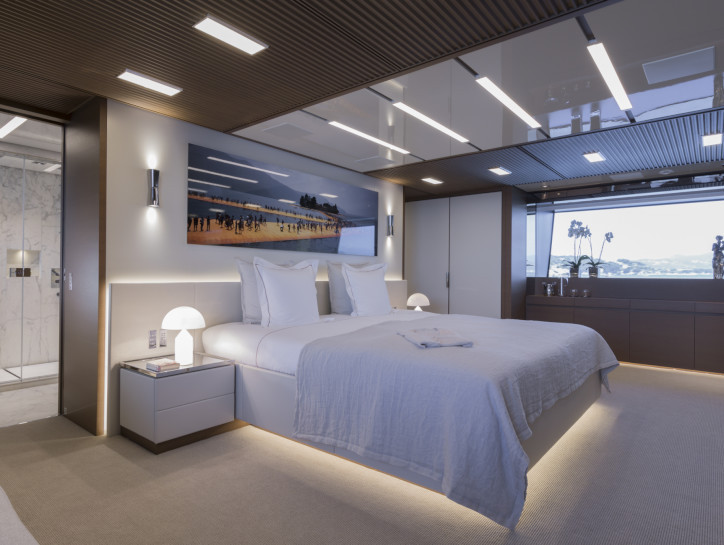
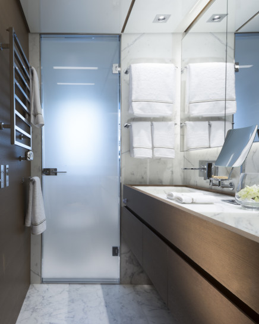
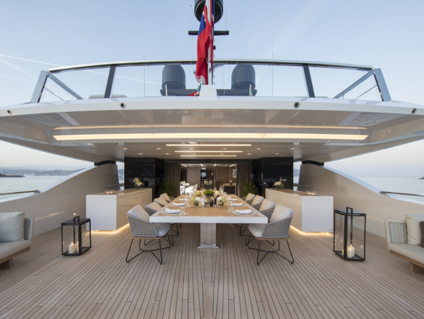
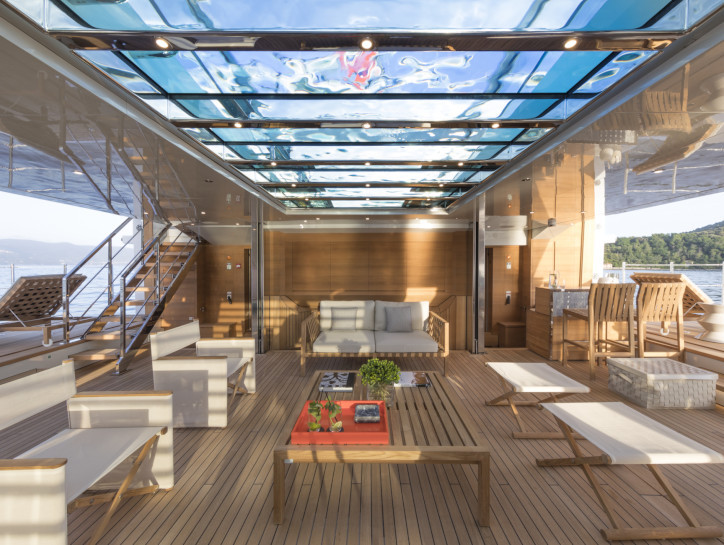
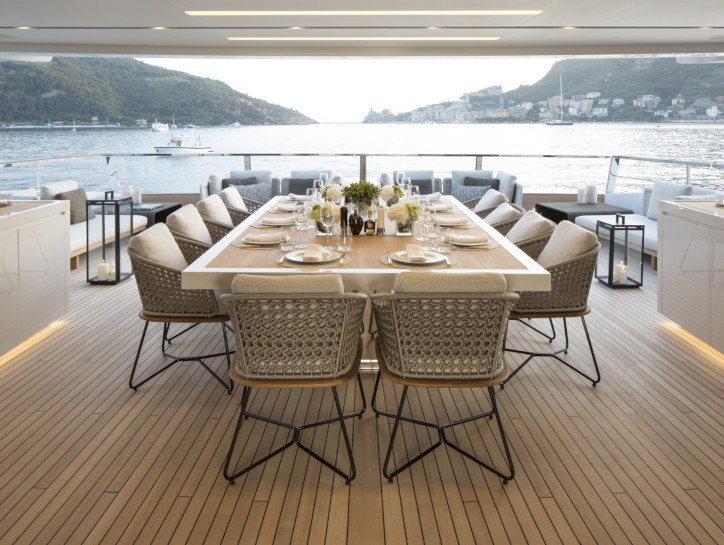
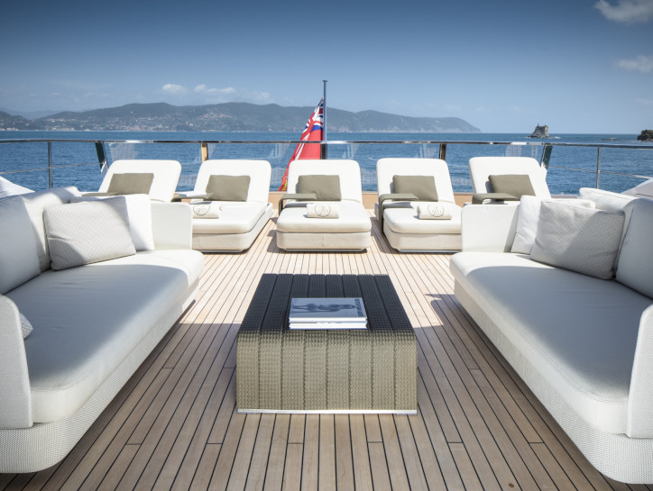
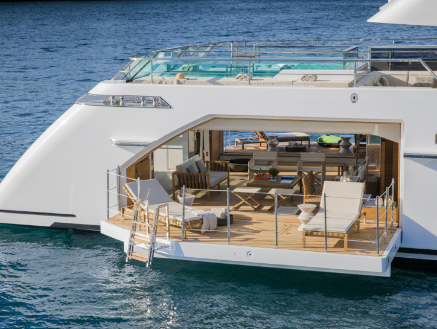

Seven Sins For Sale
2017-launched SEVEN SINS is the new flagship yacht by the highly renowned Sanlorenzo shipyard, one of the most successful yards in Italy.
- 
- 
- 
- 
- 
- 
- 
- 
- 
Exceptional indoor-outdoor living spaces and innovative use of glass throughout includes an stunning aft area, featuring a glass bottom swimming pool on the main deck which allows light to filter down to a huge beach club area below.
The beach club itself is a vast entertainment and relaxation space with fold-down side balconies and a fully equipped gym & sauna.
AT A GLANCE
-6 cabins / 12 guests
-2018 World Superyacht Award Winner
-The largest yacht ever built by Sanlorenzo
-Unique features never seen in any other yacht in her size range
-Huge beachclub with spa and sauna
-Proven charter record and excellent charter potential for a new Owner
-Smart concept and layout, feels like a much larger yacht but is still under the 500 GT mark
Price
$33,475,500
*Advertising of the above vessel in either printed publications on the internet or in any other medium is not permitted without prior permission from the Owner via the Central Agent.
All particulars are given in good faith and are believed to be correct but cannot be guaranteed.